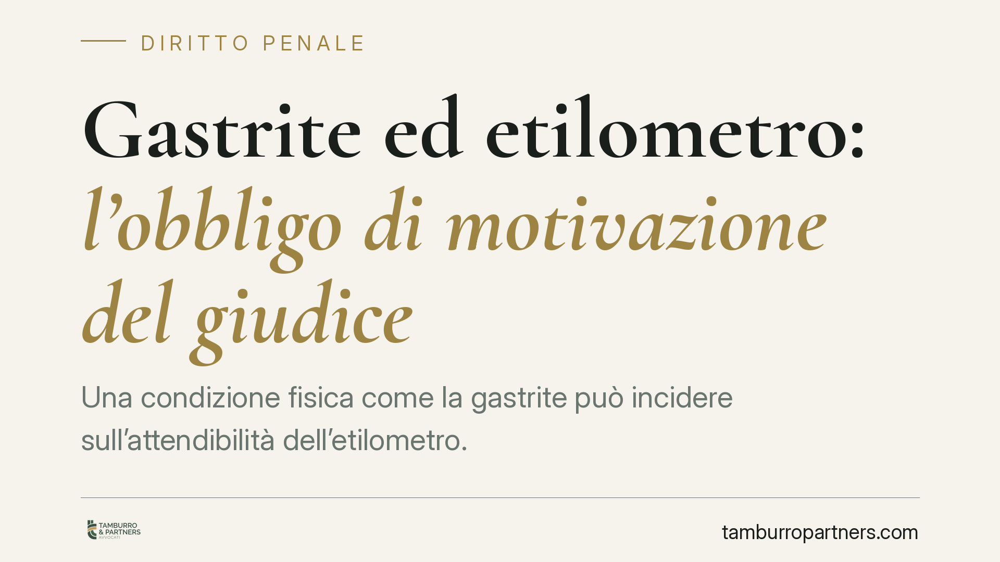
Gastrite ed etilometro: l'obbligo di motivazione del giudice
Una condizione fisica come la gastrite può incidere sull'attendibilità dell'etilometro. Una recente pronuncia della Sezione IV penale della Cassazione annulla una condanna per guid…
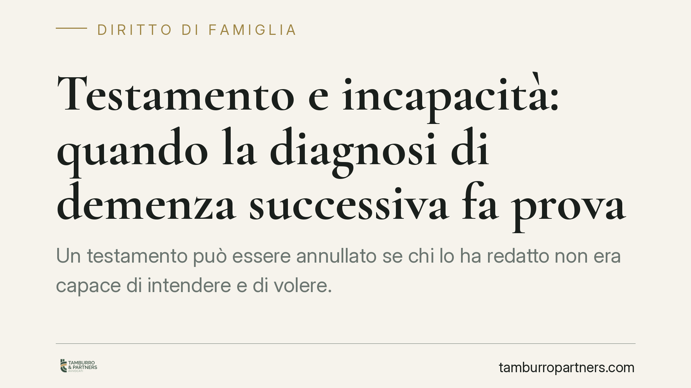
Testamento e incapacità: quando la diagnosi di demenza successiva fa prova
Un testamento può essere annullato se chi lo ha redatto non era capace di intendere e di volere. La giurisprudenza riconosce che una diagnosi di demenza accertata a breve distanza …
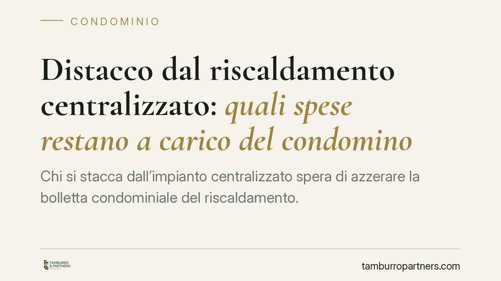
Distacco dal riscaldamento centralizzato: quali spese restano a carico del condomino
Chi si stacca dall'impianto centralizzato spera di azzerare la bolletta condominiale del riscaldamento. La legge, però, distingue con nettezza: i consumi si possono eliminare, le s…
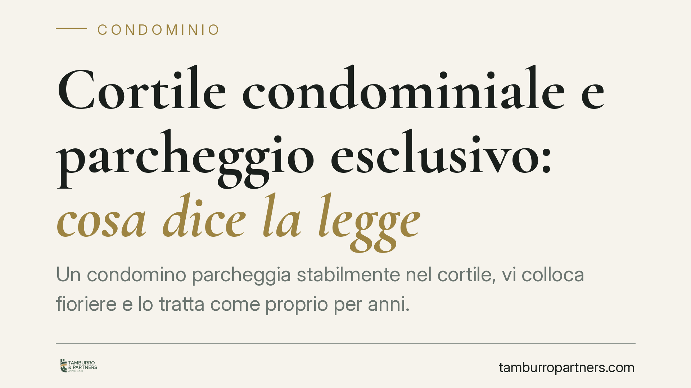
Cortile condominiale e parcheggio esclusivo: cosa dice la legge
Un condomino parcheggia stabilmente nel cortile, vi colloca fioriere e lo tratta come proprio per anni. Ne diventa proprietario? Una recente pronuncia di merito ribadisce di no: il…
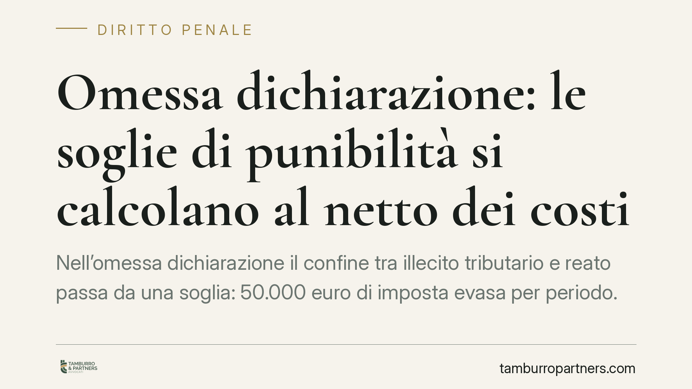
Omessa dichiarazione: le soglie di punibilità si calcolano al netto dei costi
Nell'omessa dichiarazione il confine tra illecito tributario e reato passa da una soglia: 50.000 euro di imposta evasa per periodo. Una recente pronuncia della Cassazione Penale ri…
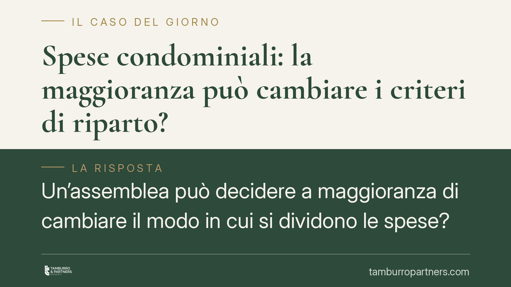
Spese condominiali: la maggioranza può cambiare i criteri di riparto?
Un'assemblea può decidere a maggioranza di cambiare il modo in cui si dividono le spese? La risposta della giurisprudenza è negativa: modificare i criteri di ripartizione in deroga…
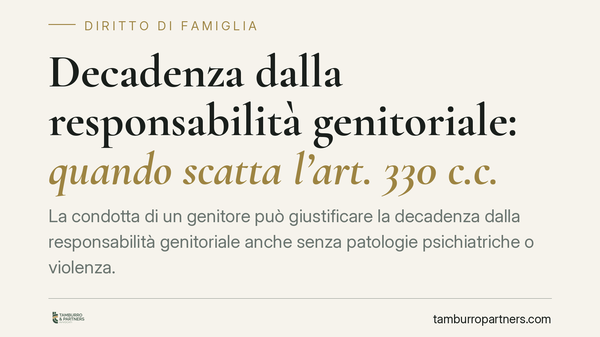
Decadenza dalla responsabilità genitoriale: quando scatta l'art. 330 c.c.
La condotta di un genitore può giustificare la decadenza dalla responsabilità genitoriale anche senza patologie psichiatriche o violenza. Rileva l'incapacità di mettere al centro i…
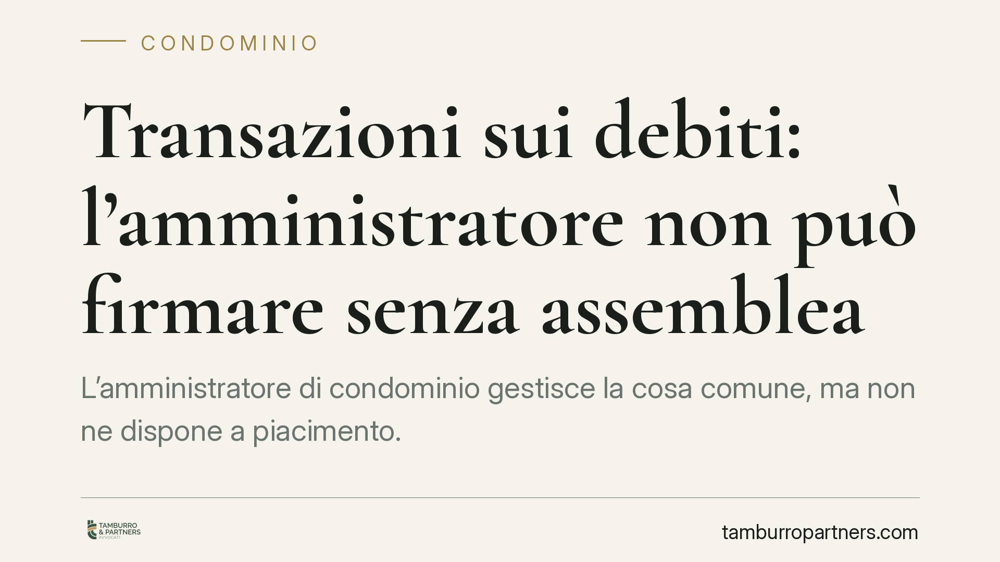
Transazioni sui debiti: l'amministratore non può firmare senza assemblea
L'amministratore di condominio gestisce la cosa comune, ma non ne dispone a piacimento. Firmare una transazione sui debiti senza mandato dell'assemblea eccede i poteri di rappresen…
Chat WhatsApp e polizia: servono il sequestro e le garanzie di legge?
Gli agenti possono leggere e fotografare le conversazioni WhatsApp trovate su un telefono? La domanda tocca un nervo scoperto del processo penale: la tutela costituzionale della co…
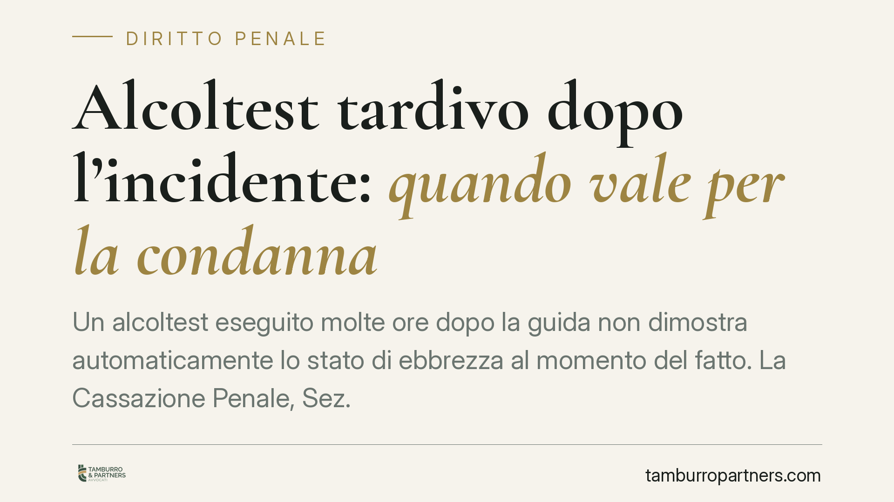
Alcoltest tardivo dopo l'incidente: quando vale per la condanna
Un alcoltest eseguito molte ore dopo la guida non dimostra automaticamente lo stato di ebbrezza al momento del fatto. La Cassazione Penale, Sez. IV, torna sul tema richiamando la c…
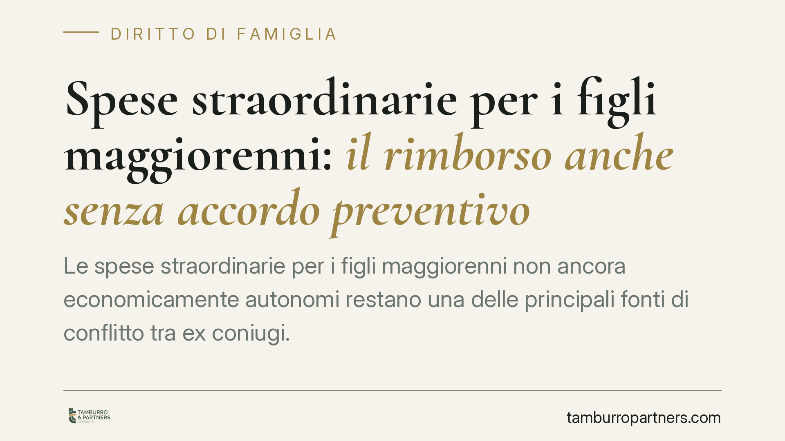
Spese straordinarie per i figli maggiorenni: il rimborso anche senza accordo preventivo
Le spese straordinarie per i figli maggiorenni non ancora economicamente autonomi restano una delle principali fonti di conflitto tra ex coniugi. Il nodo ricorrente è se il genitor…
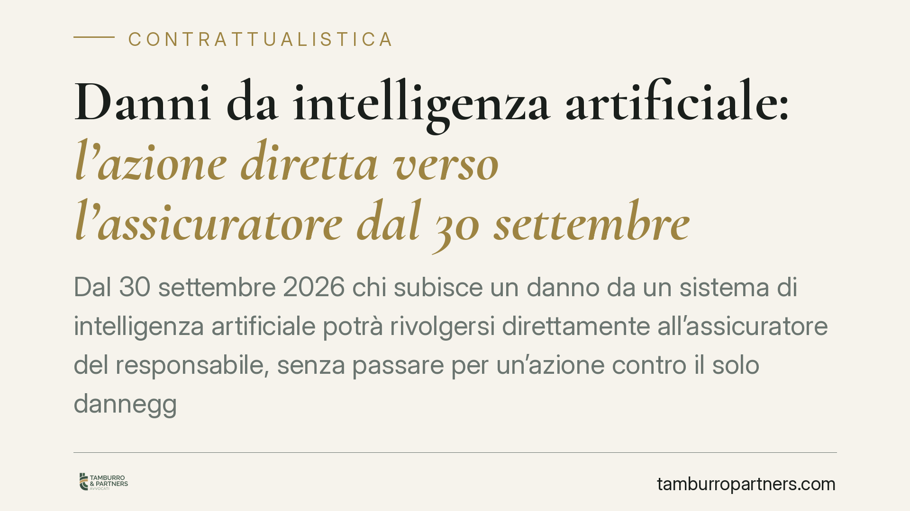
Danni da intelligenza artificiale: l'azione diretta verso l'assicuratore dal 30 settembre 2026
Dal 30 settembre 2026 chi subisce un danno da un sistema di intelligenza artificiale potrà rivolgersi direttamente all'assicuratore del responsabile, senza passare per un'azione co…
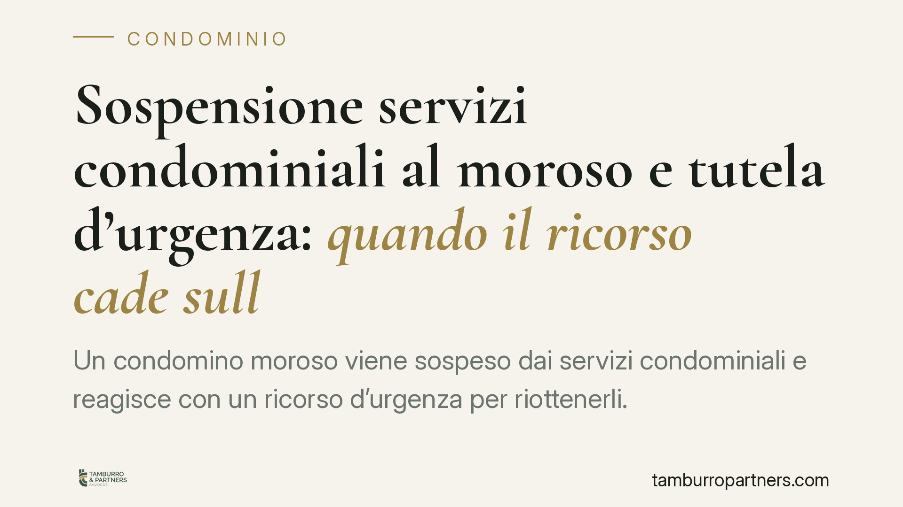
Sospensione servizi condominiali al moroso e tutela d'urgenza: quando il ricorso cade sulla forma
Un condomino moroso viene sospeso dai servizi condominiali e reagisce con un ricorso d'urgenza per riottenerli. Ma il giudice non entra nel merito: dichiara il ricorso inammissibil…
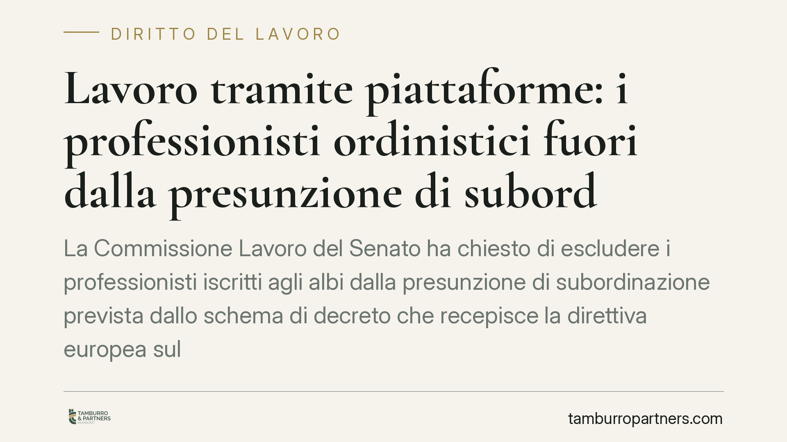
Lavoro tramite piattaforme: i professionisti ordinistici fuori dalla presunzione di subordinazione
La Commissione Lavoro del Senato ha chiesto di escludere i professionisti iscritti agli albi dalla presunzione di subordinazione prevista dallo schema di decreto che recepisce la d…
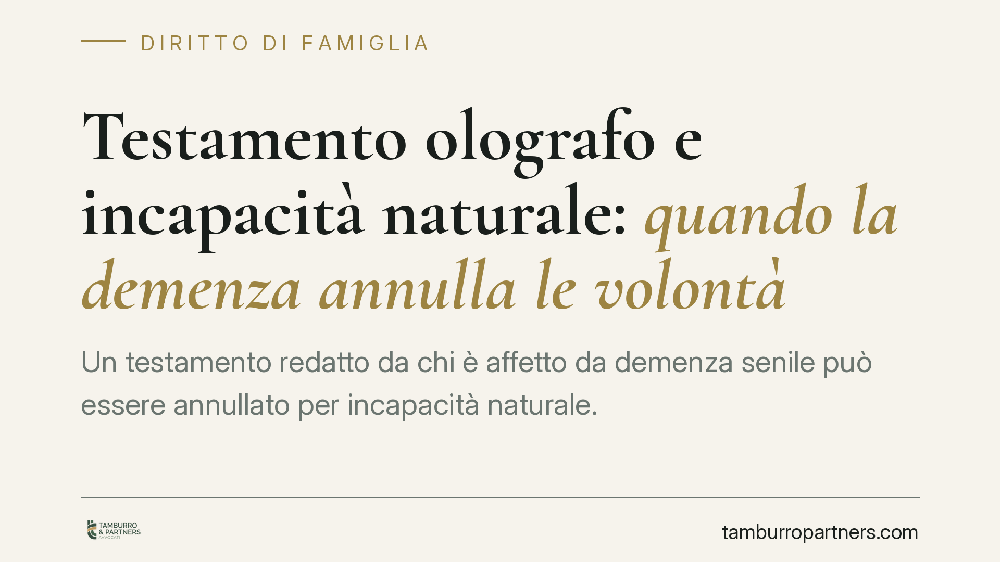
Testamento olografo e incapacità naturale: quando la demenza annulla le volontà
Un testamento redatto da chi è affetto da demenza senile può essere annullato per incapacità naturale. Quando la malattia è permanente e accertata in un periodo prossimo alla redaz…
Investimento di pedone e fuga: quando scatta il reato ex art. 189 CdS
Chi investe un pedone, scende, lo affronta e poi riparte può rispondere di fuga e omessa assistenza. Per la Cassazione non conta la certezza di aver provocato lesioni, ma la consap…
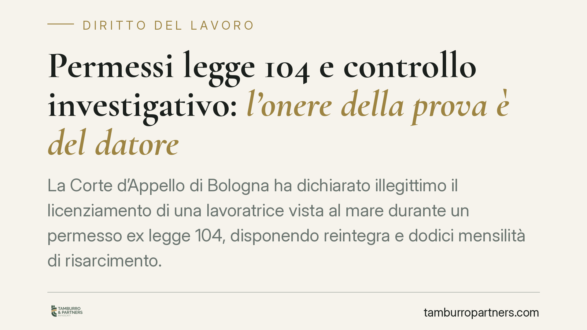
Permessi legge 104 e controllo investigativo: l'onere della prova è del datore
La Corte d'Appello di Bologna ha dichiarato illegittimo il licenziamento di una lavoratrice vista al mare durante un permesso ex legge 104, disponendo reintegra e dodici mensilità …

Spese legali contro l'INPS: la natura previdenziale della causa non basta a compensarle
Chi vince una causa contro l'INPS ha diritto al rimborso delle spese legali. La compensazione — cioè lasciare ciascuna parte a carico dei propri costi — non può essere disposta sol…

Offese al datore di lavoro: dove finisce la critica e inizia il licenziamento
Accusare pubblicamente l'azienda di irregolarità sulle buste paga può costare il posto, se l'addebito è falso e diffuso oltre le sedi appropriate. Il diritto di critica del lavorat…

Contratto di mantenimento: senza alea il patto è nullo
Cedere la casa al figlio in cambio di assistenza è prassi diffusa. Ma se, al momento del rogito, il disponente è già gravemente malato e le cure valgono molto meno dei beni trasfer…

Omesso mantenimento: la linea di confine tra art. 570 e 570-bis c.p.
Chi non versa il mantenimento rischia il penale, ma non sempre per la stessa ragione. Il Tribunale di Udine (sent. 120/2026) chiarisce la differenza tra l'art. 570 c.p., che impone…

Spese straordinarie per i figli: quando il rimborso non è automatico
Il rimborso delle spese straordinarie per i figli non scatta in modo meccanico. Il giudice deve qualificare la singola spesa e indicare i criteri di ripartizione con una motivazion…

Assegno divorzile anche con casa e risparmi: la funzione perequativa
La Corte di Cassazione, con l'ordinanza n. 18385/2026, conferma il diritto all'assegno divorzile anche quando chi lo richiede possiede casa e risparmi. A pesare non è solo lo stato…

Quadri e superlavoro: comporto e licenziamento nullo
I quadri direttivi sono esclusi dai vincoli standard sull'orario, ma restano tutelati sul piano della salute. Secondo un orientamento della Cassazione, se la malattia che porta al …

Fondo speciale e lavori straordinari: quando la delibera è invalida
Prima di approvare lavori straordinari il condominio deve costituire un fondo speciale di importo pari all'opera. Una recente pronuncia di merito torna sul tema e sulle conseguenze…

Mantenimento ai nipoti: quando l'obbligo dei nonni non fa scattare il reato
La Corte di Cassazione assolve i nonni imputati per il mancato versamento delle somme dovute al nipote. L'obbligo grava in via primaria sui genitori; quello degli ascendenti è solt…

Pignoramento immobiliare e canoni anticipati: cosa rischia l'affittuario
Il pignoramento immobiliare produce effetti già con la notifica dell'atto al proprietario, prima ancora della trascrizione nei registri. Un principio che incide direttamente sui co…

IA ad alto rischio e responsabilità penale: il paradosso dell'audit
Si discute in Italia l'introduzione di una fattispecie penale sulla sicurezza dei sistemi di intelligenza artificiale ad alto rischio. Le fonti divulgative anticipano pene severe e…

Droga e incidente stradale: quando scatta davvero l'aggravante
La Cassazione penale (sent. 6711/2026) mette un punto fermo: nelle lesioni stradali l'aggravante per guida sotto stupefacenti non scatta con il solo test positivo. Servono indici s…

Whistleblowing: quando la ritorsione costa cara al RPCT
Con la delibera n. 348/2026 l'ANAC ha sanzionato con 10.000 euro un Segretario Generale comunale, anche RPCT, per aver adottato procedimenti disciplinari e multe verso un dipendent…